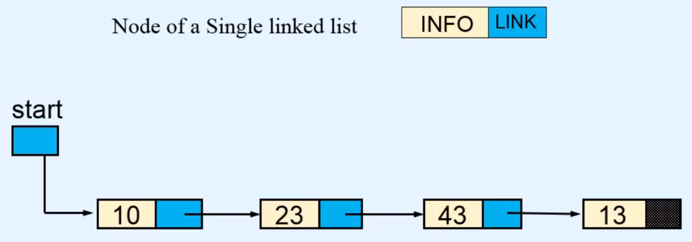

What is Linked List
- Dynamic data structure made up of nodes.
- Data is not stored in continious memory locations
- Insertion and deletion of elements is easier
- Can be used to implement abstract data types like list, stack, queue
- Efficient random access is not possible
- Implementation requires extra memory
1: Single Linked List
A singly linked list is a linear data structure where each element (node) points to the next, creating a sequence. Each node contains data and a pointer (reference) to the next node in the sequence. The last node’s pointer points to null, indicating the end of the list. Unlike arrays, linked lists don’t store elements in contiguous memory locations, which allows for dynamic memory allocation and efficient insertions or deletions.
Key Components
- Node: Contains data and a reference to the next node.
- Head: Points to the first node of the list.
- Null Reference: Indicates the end of the list.
Operations on Singly Linked List
- Insertion: Adds a new node at the beginning, end, or at a specific position.
- Deletion: Removes a node from the beginning, end, or a specific position.
- Traversal: Goes through each node, starting from the head.
- Searching: Looks for a node containing specific data.
